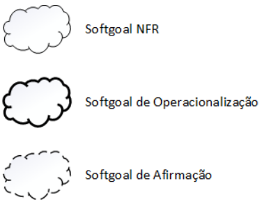
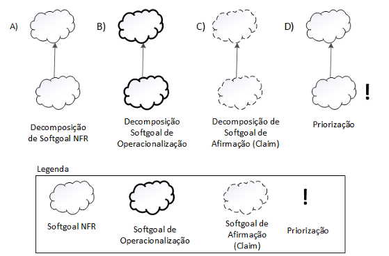
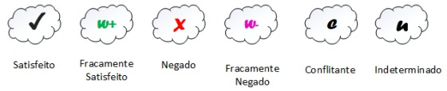
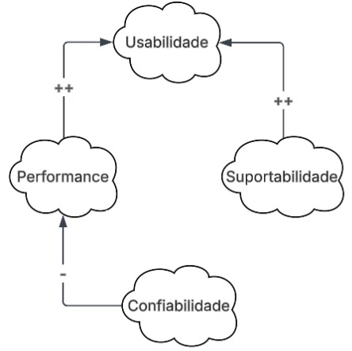
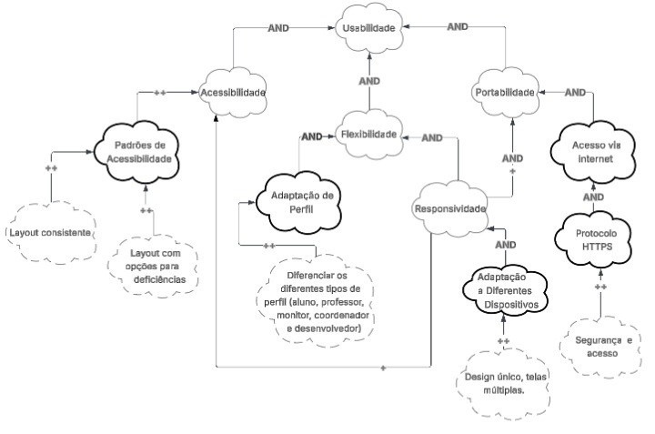
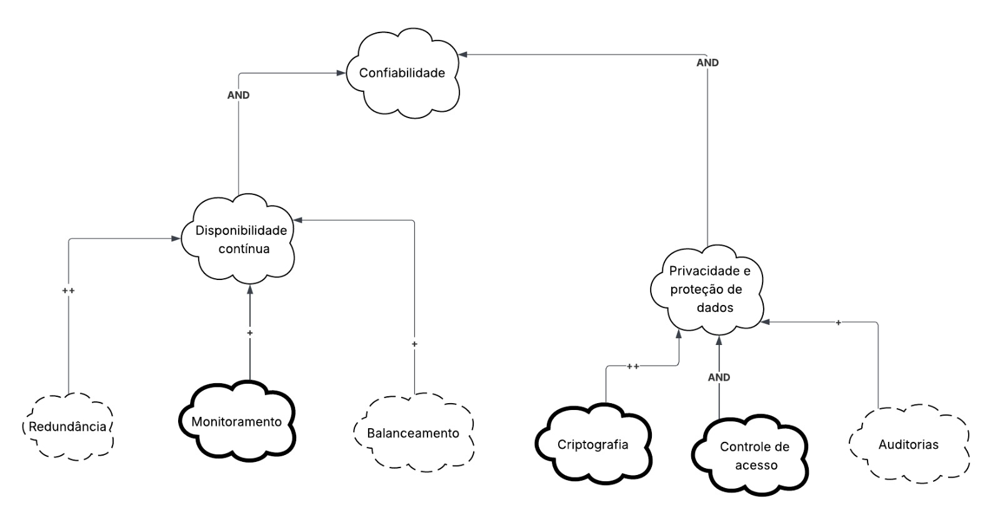
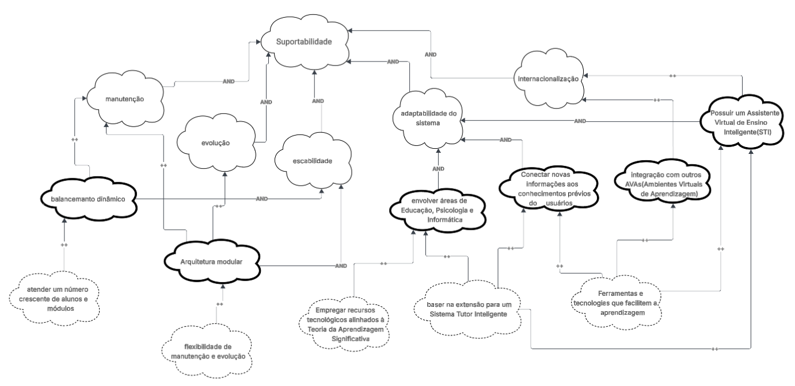
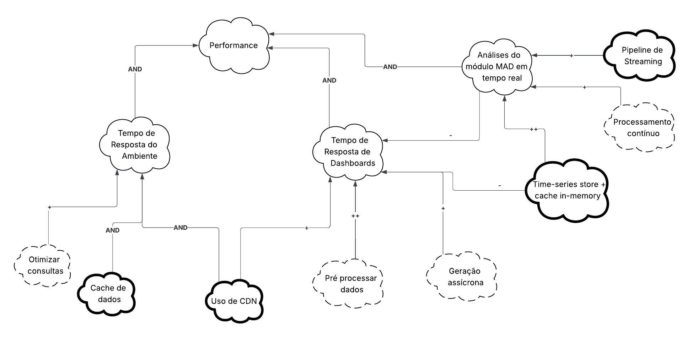

NFR Framework
Introdução
Diferente dos requisitos funcionais, que dizem o que o sistema deve fazer, os requisitos não funcionais (RNF) explicam como o sistema deve se comportar em certas situações.
Como esses requisitos costumam ser mais complexos e subjetivos, o NFR Framework ajuda a organizá-los de forma clara e estruturada. Ele permite representar, analisar e decidir sobre os RNFs usando softgoals, que são objetivos sem critérios de satisfação totalmente definidos. Neste trabalho, o NFR Framework foi usado para representar os Requisitos Não Funcionais, mostrando suas relações e possíveis conflitos por meio de um gráfico de interdependência de softgoals (SIG).
Integrantes do Grupo
A Tabela 1 apresenta todos os integrantes da equipe que participaram da etapa de NFR, juntamente com a descrição das atividades que cada um desenvolveu durante o projeto.
| Nome | Quais etapas participou |
|---|---|
| Arthur Guilherme | auxílio na criação do NFR 03 - Suportabilidade |
| Arthur Henrique | Auxílio na criação do NFR 03 - Suportabilidade e NFR 04 - Performance |
| Felipe Guimaraes | Auxilio na criação do NFR 01 - Usabilidade e NFR 04 - Performance |
| João Felipe | |
| João Sapiência | Auxílio na criação do NFR 02 - Confiabilidade e NFR 03 - Suportabilidade |
| Tiago Lemes | Criação da documentação e auxílio na criação do NFR 01 - Usabilidade |
| Vilmar José | Auxílio na criação do NFR 02 - Confiabilidade e NFR 04 - Performance |
Gráfico de Interdependência de Softgoals (SIG)
O Gráfico de Interdependência de Softgoals (Softgoal Interdependency Graph — SIG) é uma ferramenta do NFR Framework usada para mostrar de forma visual os Requisitos Não Funcionais (NFR) e como eles se relacionam entre si.
Esse gráfico apresenta, de maneira clara e resumida, as decisões de desenvolvimento, as alternativas consideradas e as justificativas de cada escolha. Sendo possível entender como diferentes softgoals se influenciam e verificar se os objetivos de nível mais alto foram alcançados.
Tipos de Softgoals
Os softgoals no NFR Framework são divididos em três tipos principais:
-
Softgoals NFR: representam os próprios Requisitos Não Funcionais, podendo ser organizados de forma hierárquica e relacionados entre si.
-
Softgoals de Operacionalização: indicam as soluções práticas ou técnicas usadas para atender aos softgoals NFR, como processos, estruturas de dados ou restrições do sistema.
-
Softgoals de Afirmação: descrevem características do domínio, como prioridades, carga de trabalho e critérios de decisão, ajudando a justificar escolhas e a rastrear as decisões tomadas durante o desenvolvimento.

Refinamentos no NFR Framework
Os refinamentos mostram uma relação de dependência hierárquica, que acontece de cima para baixo. Nela, um softgoal principal (pai) dá origem a outros softgoals mais específicos (filhos), que se relacionam diretamente com ele.
O objetivo dos refinamentos é detalhar e especializar os softgoals, tornando-os mais claros e aplicáveis ao projeto.
Os principais tipos de refinamento no NFR Framework podem ser observados na Figura 2 e são:
- Decomposição de Softgoal NFR: Divide um softgoal NFR em outros mais específicos, ajudando a esclarecer e priorizar requisitos complexos.
- Decomposição de Operacionalização: Subdivide um softgoal de operacionalização em outros softgoals de operacionalização mais específicos. Transforma uma solução geral em soluções mais detalhadas e práticas.
- Decomposição de Afirmação (Claims): Refina um softgoal de afirmação em outros softgoals do mesmo tipo . Serve para apoiar ou questionar justificativas de projeto.
- Priorização: Refina um softgoal em outro do mesmo tipo, mas com diferentes níveis de importância.

Contribuições no NFR Framework
No NFR Framework, existem diferentes tipos de contribuições que mostram como a satisfação (ou não) de um softgoal descendente influencia a satisfação do softgoal ascendente.
A seguir, são apresentados os principais tipos de contribuição definidos por Chung et al. (2000):
- AND: todos os softgoals descendentes precisam ser satisfeitos para que o softgoal ascendente também seja satisfeito.
- OR: basta que um dos softgoals descendentes seja satisfeito para que o softgoal ascendente também seja satisfeito.
- MAKE (++): contribuição totalmente positiva — se o descendente for satisfeito, o ascendente também será satisfeito no nível máximo.
- BREAK (--): contribuição totalmente negativa — se o descendente for satisfeito, o ascendente será negado.
- HELP (+): contribuição parcialmente positiva — se o descendente for parcialmente satisfeito, o ascendente também será parcialmente satisfeito.
- HURT (-): contribuição parcialmente negativa — se o descendente for satisfeito, o ascendente será parcialmente negado.
- UNKNOWN (?): contribuição desconhecida, podendo ser positiva ou negativa, dependendo do contexto.
- EQUALS: o descendente só será satisfeito se o ascendente for satisfeito; da mesma forma, será negado se o ascendente for negado.
- SOME: usada quando se conhece o tipo da contribuição (positiva ou negativa), mas não sua intensidade (parcial ou total).
- SOME+: indica certeza de que a contribuição é positiva, mas incerteza quanto ao grau.
- SOME-: indica certeza de que a contribuição é negativa, mas incerteza quanto ao grau.
Procedimento de Avaliação no NFR Framework
O procedimento de avaliação define o grau em que os requisitos não funcionais são atendidos por um conjunto de decisões do projeto. Ele verifica se cada softgoal ou interdependência do SIG foi suficientemente satisfeito. Para isso, são atribuídos rótulos aos softgoals, indicando seu nível de satisfação, que podem ser observados na Figura 3.
- (✓) Satisfeito
- (𝒲+) Fracamente Satisfeito
- ( X) Negado
- (𝒲-) Fracamente Negado
- (🗲) Conflitante
- (u) Indeterminado

A avaliação começa pelos softgoals de nível mais baixo na hierarquia, onde são tomadas decisões sobre aceitar ou rejeitar alternativas de projeto. Essas decisões geram os primeiros rótulos, que são então usados para calcular o impacto nos softgoals de níveis superiores.
Esse processo continua de forma hierárquica até chegar aos softgoals de nível mais alto do SIG, permitindo entender como as decisões locais afetam os objetivos globais do sistema.
Metodologia
Para a construção do NFR Framework, selecionamos todos os requisitos não-funcionais elicitados no projeto e os classificamos em temas como usabilidade, confiabilidade, suportabilidade e performance.
Cada requisito foi detalhado em um cartão de especificação, contendo o índice e o nome do requisito não-funcional, classifciação , descrição, justificativa, origem, critérios de aceitação, dependências, prioridade possíveis conflitos.
Em seguida, organizamos os requisitos em um Gráfico de Interdependência de Softgoals (SIG), que representa visualmente as relações de contribuição entre os softgoals e o refinamento hierárquico entre eles. Para a construção do SIG, utilizamos como ferramenta o Lucidchart.
A avaliação dos softgoals foi realizada aplicando os rótulos do NFR Framework, propagando as decisões dos níveis mais baixos até o topo da hierarquia.
Cartões de Especificação
Um cartão de especificação é uma forma de registrar de maneira estruturada os detalhes de um requisito de software, focando em fornecer uma visão clara, padronizada e completa de cada requisito. Nesse tópico, os cartões de especificação foram voltados para os requisitos não-funcionais e organizados conforme o padrão apresentado na Tabela 2:
| Índice e Título do Requisito |
|---|
| Classificação: Em qual classe de requisito não-funcional se adequa |
| Descrição: Breve descrição do requisito |
| Justificativa: Explica por que o requisito é necessário e qual benefício traz ao sistema ou ao indivíduo |
| Origem do Requisito: De qual técnica(s) de elicitação ele se origina |
| Critério de Aceitação: Como será verificado que o requisito foi atendido |
| Dependências: Requisitos, módulos ou condições que devem existir para que este requisito seja implementado |
| Prioridade: Indica a importância do requisito (ex.: alta, média, baixa) |
| Conflitos: Possíveis conflitos ou restrições com outros requisitos |
| RNF01 – Adaptabilidade ao Perfil |
|---|
| Classificação: Usabilidade |
| Descrição: A interface deve se adaptar automaticamente ao perfil de cada indivíduo (aluno, monitor, professor, etc.), exibindo apenas as funcionalidades e informações relevantes a cada papel. |
| Justificativa: Personalizar a experiência do indivíduo, tornando a navegação mais intuitiva e reduzindo a complexidade de uso para diferentes perfis. |
| Origem do Requisito: Análise de Documento |
| Critério de Aceitação: O sistema ajusta automaticamente o conteúdo e as permissões de acordo com o perfil do usuário no momento do login. |
| Dependências: Cadastro e autenticação de perfis de usuário. |
| Prioridade: Alta |
| Conflitos: Nenhum |
| RNF05 – Recursos Alinhados à TAS |
|---|
| Classificação: Suportabilidade |
| Descrição: O sistema deve empregar recursos tecnológicos alinhados à Teoria da Aprendizagem Significativa (TAS). Isso significa que o sistema deve utilizar ferramentas e tecnologias que facilitem a aprendizagem ativa, conectando novas informações aos conhecimentos prévios do aluno, promovendo compreensão profunda e retenção duradoura. |
| Justificativa: Garantir que a plataforma ofereça suporte pedagógico adequado, reforçando a aprendizagem ativa e contextualizada de acordo com a Teoria da Aprendizagem Significativa. |
| Origem do Requisito: Análise de Documento |
| Critério de Aceitação: O sistema incorpora mecanismos (como mapas conceituais, recomendações de conteúdo e feedback contextual) que relacionam novos conceitos aos conhecimentos prévios do aluno. |
| Dependências: Modelagem dos conteúdos educacionais com base na TAS. |
| Prioridade: Média |
| Conflitos: Nenhum |
| RNF08 – Armazenamento seguro e criptografado |
|---|
| Classificação: Confiabilidade |
| Descrição: O sistema deve garantir que os dados dos estudantes sejam armazenados de forma segura e criptografada. |
| Justificativa: Protege informações sensíveis dos indivíduos contra acessos indevidos, vazamentos e ataques cibernéticos, promovendo confiança no uso da plataforma. |
| Origem do Requisito: Entrevista . |
| Critério de Aceitação: Os dados devem ser armazenados com criptografia AES-128 e acesso restrito mediante autenticação segura. |
| Dependências: Implementação do módulo de segurança, autenticação de acesso e infraestrutura de banco de dados compatível com os mecanismos de criptografia. |
| Prioridade: Alta |
| Conflitos: Pode impactar o tempo de resposta exigido por RNF03 e RNF10. |
| RNF09 – Disponibilidade 24/7 |
|---|
| Classificação: Confiabilidade |
| Descrição: O sistema deve estar disponível 24 horas por dia, 7 dias por semana, com tempo de indisponibilidade máximo de 1% ao mês. |
| Justificativa: Garantir que os indivíduos possam acessar a plataforma a qualquer momento, adaptando-se a diferentes rotinas de estudo e trabalho. |
| Origem do Requisito: Entrevista |
| Critério de Aceitação: O tempo de funcionamento do sistema, medido mensalmente por ferramentas de monitoramento, deve ser de no mínimo 99%. |
| Dependências: Infraestrutura de servidor robusta (ex: nuvem com redundância), plano de contingência e monitoramento de serviços. |
| Prioridade: Alta |
| Conflitos: Pode exigir custos de infraestrutura elevados e limitar janelas de manutenção necessárias para atualizações (Suportabilidade). |
| RNF10 – Tempo de Resposta de Dashboards |
|---|
| Classificação: Performance |
| Descrição: O tempo de resposta para carregamento de dashboards e gráficos deve ser inferior a 3 segundos. |
| Justificativa: Assegurar uma experiência de uso fluida e ágil ao consultar dados analíticos, evitando frustração e abandono da ferramenta. |
| Origem do Requisito: Entrevista |
| Critério de Aceitação: O tempo médio de carregamento completo (renderização de todos os elementos) dos dashboards e gráficos deve ser inferior a 3 segundos, medido em 95% das requisições. |
| Dependências: Otimização de consultas ao banco de dados e da renderização dos componentes gráficos no frontend. |
| Prioridade: Alta |
| Conflitos: Pode conflitar com RNF08 (criptografia de dados) e RNF15 (auditoria de acesso), que adicionam sobrecarga ao processamento e consulta de dados. |
| RNF14 – Escalabilidade |
|---|
| Classificação: Suportabilidade |
| Descrição: O sistema deve permitir escalabilidade para atender um número crescente de alunos e módulos sem perda de desempenho. |
| Justificativa: Garante que a aplicação mantenha estabilidade e eficiência mesmo com o aumento de acessos e funcionalidades, evitando gargalos e falhas de disponibilidade. |
| Origem do Requisito: Entrevista. |
| Critério de Aceitação: O sistema deve suportar, no mínimo, 5.000 acessos simultâneos com tempo de resposta inferior a 2 segundos. |
| Dependências: Arquitetura escalável (ex.: microserviços), infraestrutura em nuvem e balanceamento de carga. |
| Prioridade: Alta |
| Conflitos: Pode entrar em conflito com RNF08. |
| RNF15 – Conformidade com LGPD |
|---|
| Classificação: Confiabilidade |
| Descrição: O sistema deve garantir a privacidade dos dados dos estudantes em conformidade com a LGPD (Lei Geral de Proteção de Dados). |
| Justificativa: Atender às exigências legais, protegendo os dados pessoais dos indivíduos contra acessos indevidos e evitando sanções. Gera confiança na plataforma. |
| Origem do Requisito: Entrevista |
| Critério de Aceitação: O sistema deve possuir mecanismos de consentimento de uso de dados, permitir a anonimização ou exclusão de dados pessoais sob demanda, e ter políticas de privacidade claras. Acesso aos dados deve ser restrito e auditado. |
| Dependências: Implementação de RNF08 (Armazenamento seguro) e módulos de controle de acesso e auditoria. |
| Prioridade: Alta |
| Conflitos: A implementação de logs de auditoria detalhados pode impactar a performance do sistema, especialmente em consultas (RNF10). |
| RNF03 - Tempo de Resposta do Ambiente |
|---|
| Classificação: Performance |
| Descrição: O sistema deve processar as requisições do indivíduo e apresentar uma resposta visual completa em, no máximo, 1 segundo. |
| Justificativa: Um tempo de resposta rápido é crucial para a retenção e satisfação do aluno. Atrasos acima de 1 segundo podem causar frustração, prejudicar o foco no estudo e aumentar a taxa de abandono da plataforma. |
| Origem do Requisito: Analise de documento |
| Critério de Aceitação: Em 95% das medições realizadas com ferramentas de teste de performance (ex: Lighthouse, JMeter) sob condições de carga normais (ex: 50 acessos simultâneos), o tempo de resposta para as interações principais (carregar página, submeter atividade, abrir vídeo) deve ser inferior a 1 segundo. |
| Dependências: Infraestrutura de servidor e rede otimizada; Otimização de consultas ao banco de dados; Otimização de assets de front-end (imagens, scripts). |
| Prioridade: Alta |
| Conflitos: Pode conflitar RNF 08 - O sistema deve garantir que os dados dos estudantes sejam armazenados de forma segura e criptografada. Pois pode demorar a carregar os dados |
| RNF11 - Compatibilidade com Dispositivos Móveis |
|---|
| Classificação: Usabilidade |
| Descrição: A interface do sistema deve se adaptar (layout, fontes, menus) e ser plenamente funcional em diferentes tamanhos de tela, com foco em smartphones e tablets. |
| Justificativa: Os alunos utilizam diversos dispositivos para estudar. Garantir a responsividade permite que o indivíduo tenha uma boa experiência de aprendizado independentemente de onde acesse, aumentando a acessibilidade e a flexibilidade. |
| Origem do Requisito: Entrevista |
| Critério de Aceitação: 1. O layout se reajusta em larguras de tela de 360px (móvel) e 768px (tablet) sem barras de rolagem horizontais. 2. Todos os botões e links são facilmente clicáveis (touch-friendly). 3. A navegação principal é adaptada para um menu "hambúrguer" ou equivalente em telas menores. 4. Conteúdos como vídeos (RF17) e gráficos de progresso (RF08, RF09) são exibidos e funcionam corretamente. |
| Dependências: Utilização de técnicas de design responsivo (ex: Media Queries, Flexbox/Grid CSS) no desenvolvimento do front-end. |
| Prioridade: Alta |
| Conflitos: Nenhum conflito direto identificado. |
| RNF13 - Integração com outros AVAs e Sistemas Educacionais Externos |
|---|
| Classificação: Suportabilidade |
| Descrição: O sistema deve possibilitar integração bidirecional com AVAs e sistemas educacionais externos por meio de padrões abertos e APIs, além de webhooks e SDKs quando aplicável. |
| Justificativa: Garantir interoperabilidade com o ecossistema educacional, evitar vendor lock-in, reduzir retrabalho de dados e viabilizar adoção/expansão do produto em diferentes contextos institucionais. |
| Origem do Requisito: Entrevista |
| Critério de Aceitação: 1) LTI 1.3/Advantage operacional como Plataforma e/ou Ferramenta, com launch OIDC/OAuth2 validado em ambiente de homologação; 2) API REST pública com documentação OpenAPI e controle de acesso por OAuth2 Client Credentials, contemplando ao menos users, courses/classes, enrollments, assignments, grades; 3) Webhooks para eventos de criação/atualização de cadastro, matrícula, publicação/atualização de nota e conclusão; 4) Conteúdo: suporte a pelo menos um entre SCORM 1.2/2004 ou xAPI (importação e execução/registro); 5) Teste de interoperabilidade bem-sucedido com 2 sistemas externos distintos em homologação, com registro de casos e evidências. |
| Dependências: Gateway de APIs; gerenciamento de credenciais/segredos; mapeamento e conciliação de identidades (SSO/OIDC); rate limiting e observabilidade; governança de dados e consentimento (LGPD). |
| Prioridade: Alta |
| Conflitos: Pode conflitar com RNF03 e RNF10, pois o aumento de chamadas externas pode gerar sobrecarga e afetar o tempo de resposta. Também pode conflitar com RNF15 devido à troca de dados sensíveis entre plataformas, exigindo maior controle de consentimento e segurança. Além disso, pode impactar RNF09 em períodos de manutenção ou falhas de integração. |
| RNF07 - Análises do módulo MAD em tempo real |
|---|
| Classificação: Performance |
| Descrição: As análises do módulo MAD devem ser processadas e refletidas nas visualizações e alertas em tempo real, a partir de eventos de uso da plataforma (interações, submissões, notas, progresso). |
| Justificativa: Fornecer feedback imediato para alunos e professores, apoiando intervenções rápidas e decisões pedagógicas baseadas em dados atualizados. |
| Origem do Requisito: Entrevista |
| Critério de Aceitação: 1) Latência ponta-a-ponta P95 ≤ 1 s (ingestão do evento → cálculo → disponibilidade em widgets/indicadores principais); P99 ≤ 2 s sob carga nominal; 2) Atualização de dashboards/widgets do MAD em até 1 s após novo evento em carga nominal (p.ex., 200 eventos/s e 100 acessos concorrentes); 3) Alertas gerados e enviados em até 2 s após a condição ser satisfeita; 4) Disponibilidade do pipeline de streaming ≥ 99% ao mês; 5) Métricas de throughput, lag, erro e backpressure monitoradas, com SLOs definidos e painéis de observabilidade. |
| Dependências: Pipeline de streaming ; motor de processamento contínuo; timeseries ou columnar store + caching (in-memory); particionamento/escala horizontal; CDN para push de atualizações; feature flags para degradação graciosa. |
| Prioridade: Alta |
| Conflitos: Pode conflitar com RNF08, pois a criptografia e a segurança adicionam latência ao processamento de dados. Pode impactar RNF10 devido ao aumento da carga de processamento de gráficos e relatórios em tempo real. Também pode gerar conflito parcial com RNF15, pois a anonimização e mascaramento de dados podem exigir agregações assíncronas, reduzindo a instantaneidade das análises. |
| RNF06 – Abordagem Multidisciplinar do Projeto |
|---|
| Classificação: Suportabilidade (Organizacional) |
| Descrição: O projeto deve ser desenvolvido e mantido por uma equipe multidisciplinar, integrando especialistas das áreas de Educação (Pedagogia), Psicologia (Cognitiva) e Informática (IA, Engenharia de Software). |
| Justificativa: Assegurar que as funcionalidades do SAE (especialmente o ITA e as análises do MAD) sejam pedagogicamente válidas, psicologicamente adequadas e tecnicamente robustas, alinhando a tecnologia aos fundamentos teóricos do aprendizado (TAS). |
| Origem do Requisito: Análise de Documento |
| Critério de Aceitação: 1. As especificações de regras pedagógicas e modelos cognitivos devem ser revisadas e validadas por especialistas das áreas de Educação e Psicologia. 2. As soluções de Informática implementadas devem refletir fielmente os modelos definidos pela equipe multidisciplinar. |
| Dependências: Disponibilidade de profissionais e consultores das três áreas (Educação, Psicologia, Informática) durante o ciclo de vida do projeto. |
| Prioridade: Alta |
| Conflitos: A necessidade de validação constante entre as diferentes áreas pode aumentar o tempo de ciclo do desenvolvimento de novas funcionalidades, potencialmente impactando cronogramas de entrega. |
| RNF12 – Conformidade com Padrões de Acessibilidade |
|---|
| Classificação: Usabilidade (Acessibilidade) |
| Descrição: O sistema deve seguir padrões de acessibilidade (como as diretrizes WCAG 2.1) para garantir que possa ser utilizado por todos os indivíduos, incluindo pessoas com deficiências (visuais, auditivas, motoras ou cognitivas). |
| Justificativa: Tornar a plataforma inclusiva, permitindo que todos os alunos, independentemente de suas habilidades, possam acessar o conteúdo e as ferramentas de aprendizado sem barreiras, garantindo a equidade educacional. |
| Origem do Requisito: Entrevista |
| Critério de Aceitação: 1. O sistema deve atingir o nível de conformidade "AA" das diretrizes WCAG 2.1. 2. Toda a navegação e funcionalidade principal do sistema deve ser operável via teclado. 3. As imagens informativas devem possuir texto alternativo (alt text) e o contraste de cores entre texto e fundo deve atender aos mínimos do nível AA. 4. O sistema deve ser compatível com os principais leitores de tela (ex: NVDA, VoiceOver). |
| Dependências: Utilização de HTML semântico e práticas de desenvolvimento front-end que sigam as diretrizes de acessibilidade. |
| Prioridade: Alta |
| Conflitos: Nenhum conflito direto identificado. Pode exigir um esforço de design e desenvolvimento mais detalhado para componentes interativos complexos, como os gráficos do RNF10. |
Gráfico de Interdependência de Softgoals (SIG)
A Figura 4 apresenta o Gráfico de Interdependência de Softgoals (SIG) dos Requisitos Não Funcionais do projeto. Esse gráfico mostra como os softgoals se relacionam entre si e de que forma cada requisito contribui para atingir os objetivos gerais do sistema.

NFR 01 - Usabilidade
Os requisitos utilizados para o NFR 01 (Usabilidade) estão apresentados na página de Requisitos Elicitados e são os seguintes:
- RNF01: A interface deve se adaptar automaticamente ao perfil de usuário (aluno, monitor, professor etc.).
- RNF02: O sistema deve ser acessível pela internet, permitindo o uso tanto presencial quanto a distância.
- RNF11 O sistema deve ser totalmente compatível com dispositivos móveis, garantindo responsividade e adaptação automática a diferentes tamanhos e orientações de tela (smartphones, tablets e notebooks).
- RNF12 O sistema deve seguir padrões de acessibilidade para garantir a usabilidade a todos os indivíduos, incluindo pessoas com deficiência.
A Figura 5 apresenta o Gráfico de Interdependência de Softgoals (SIG) referente ao NFR 01, destacando as relações de contribuição entre os requisitos de Usabilidade.

Avaliação dos softgoals de usabilidade:
- RNF01 (Adaptabilidade de Perfil): Satisfeito (✓) – A interface adapta-se automaticamente ao perfil do usuário (aluno, monitor, professor etc.), oferecendo conteúdo e funcionalidades condizentes com cada papel.
- RNF02 (Acessibilidade Remota): Satisfeito (✓) – O sistema é acessível pela internet, permitindo uso tanto presencial quanto a distância, sem restrições significativas.
- RNF11 (Compatibilidade com Dispositivos Móveis): Negado (X) – O sistema não possui versão mobile nem apresenta responsividade adequada, impossibilitando o uso em diferentes tamanhos e orientações de tela.
- RNF12 (Acessibilidade): Negado (X) – O sistema não segue integralmente os padrões de acessibilidade, pois não oferece recursos adequados para indivíduos com deficiência visual, como suporte a leitores de tela, design claro com bom contraste e opção para daltonismo.
NFR 02 - Confiabilidade
Os requisitos utilizados para o NFR 02 (Confiabilidade) estão apresentados na página de Requisitos Elicitados e são os seguintes:
- RNF09: O sistema deve estar disponível 24 horas por dia, 7 dias por semana, com tempo de indisponibilidade máximo de 1% ao mês.
- RNF15: O sistema deve garantir a privacidade dos dados dos estudantes em conformidade com a LGPD.

Avaliação dos softgoals de confiabilidade:
- RNF09 - Disponibilidade contínua: Satisfeito (✓) - O sistema está disponível 24 horas por dia nos 7 dias da semana, além do monitoramento para ajustes caso ocorra uma indisponibilidade no sistema
- RNF15 - Privacidade e proteção de dados: Satisfeito (✓) - O sistema possui um meio de proteção de dados do indivíduo de acordo com a LGPD
NFR 03 - Suportabilidade
Os requisitos utilizados para o NFR 03 (Suportabilidade) estão apresentados na página de Requisitos Elicitados e são os seguintes:
- RNF04: Deve se basear na extensão de um Sistema Tutor Inteligente (STI) para um Assistente Virtual de Ensino Inteligente (ITA).
- RNF05: Deve empregar recursos tecnológicos alinhados à Teoria da Aprendizagem Significativa (TAS).
- RNF06: Projeto multidisciplinar envolvendo Educação, Psicologia e Informática.
- RNF13: O sistema deve possibilitar integração com outros AVAs e sistemas educacionais externos.
- RNF14: O sistema deve permitir escalabilidade para atender um número crescente de alunos e módulos sem perda de desempenho.
A Figura 7 apresenta o Gráfico de Interdependência de Softgoals (SIG) referente ao NFR 03, destacando as relações de contribuição entre os requisitos de Usabilidade.

Avaliação dos softgoals de usabilidade:
- RNF04 (Extensão de STI para ITA): Satisfeito (✓) – O sistema se baseia na extensão de um Sistema Tutor Inteligente (STI) para um Assistente Virtual de Ensino Inteligente (ITA), promovendo suporte personalizado ao aprendizado.
- RNF05 (Tecnologia alinhada à TAS): Satisfeito (✓) – Emprega recursos tecnológicos que favorecem a Teoria da Aprendizagem Significativa (TAS), como contextualização, interação e construção ativa do conhecimento.
- RNF06 (Projeto Multidisciplinar): Satisfeito (✓) – multidisciplinar, envolvendo as áreas de Educação, Psicologia e Informática, o que implica em flexibilidade de manutenção e evolução do sistema para atender diferentes perspectivas e áreas de conhecimento.
- RNF13 (Integração com outros AVAs e Sistemas Educacionais Externos): Fracamente Satisfeito (𝒲+) – O sistema possibilita integração com outros ambientes virtuais de aprendizagem por meio de APIs e padrões abertos, mas o nível de compatibilidade e estabilidade das integrações ainda requer testes adicionais.
- RNF14 (Escalabilidade): Indeterminado (u) – O sistema permite escalabilidade, atendendo a um número crescente de alunos e módulos sem comprometer o desempenho.
NFR 04 - Performance
Os requisitos utilizados para o NFR 04 (Perfomance) estão apresentados na página de Requisitos Elicitados e são os seguintes:
- RNF03: O ambiente deve ter tempo de resposta de até 1 segundo para todos os perfis de usuários.
- RNF07: As análises do módulo MAD devem ser realizadas em tempo real.
- RNF10: O tempo de resposta para carregamento de dashboards e gráficos deve ser inferior a 3 segundos.
A Figura 8 apresenta o Gráfico de Interdependência de Softgoals (SIG) referente ao NFR 04, destacando as relações de contribuição entre os requisitos de Performance.

Avaliação dos softgoals de usabilidade:
- RNF03 (Tempo de resposta de ate 1 segundo): (u) Indeterminado - O ambiente ainda nao tem tempo de resposta de até 1 segundo para todos os perfis de usuários.
- RNF07 (Análises do módulo MAD em tempo real): Satisfeito (✓) – As análises do módulo MAD são processadas e exibidas praticamente em tempo real, atendendo ao limite máximo de 2 segundos em 99% das requisições, conforme testes de carga.
- RNF10 (Tempo de resposta em dashboards e graficos): (u) Indeterminado O tempo de resposta para carregamento de dashboards e gráficos ainda nao é inferior a 3 segundos.
Gravações da Validação do Documento
Gravação 1
A Tabela 9 mostra os participantes do grupo envolvidos na validação.
| Nome |
|---|
| Arthur Guilherme |
| Tiago Lemes |
A Tabela 10 apresenta as informações do indivíduo que participou da etapa de validação, incluindo seu nome e dados sobre a gravação, como data, hora e local.
| Nome | Data | Hora | Local |
|---|---|---|---|
| João Igor | 21/10/2025 | 13:15 | Faculdade de Ciências e Tecnologias em Engenharia – FCTE/UnB |
Além disso, a gravação da validação conferida em: https://youtu.be/oau9-6bMAJQ?si=HfKC5XhVh90sN2V3.
Gravação 2
A Tabela 11 mostra os participantes do grupo envolvidos na validação.
| Nome |
|---|
| Vilmar José |
A Tabela 12 apresenta as informações do usuário que participou da etapa de validação, incluindo seu nome e dados sobre a gravação, como data, hora e local.
| Nome | Data | Hora | Local |
|---|---|---|---|
| Bianca Zero | 21/10/2025 | 11:50 | Faculdade de Ciências e Tecnologias em Engenharia – FCTE/UnB |
Além disso, a gravação da validação conferida em: Link do Youtube
Agradecimentos
O Grupo 03 agradece o apoio das ferramentas de Inteligência Artificial Generativa — ChatGPT, Google Gemini e DeepSeek — na revisão gramatical e de estilo deste artigo. As tecnologias foram utilizadas para tornar o texto mais claro, objetivo e fácil de ler. Todo o conteúdo, assim como a precisão técnica e as ideias apresentadas, permanecem de responsabilidade dos autores.
Referências
SERRANO, Milene; SERRANO, Maurício. Requisitos - Aula 17. Disponível em: Requisitos_Aula 17. Acesso em: 21 outubro 2025.
Reinaldo Antônio da Silva – Um Catálogo de Requisitos Não-Funcionais para Sistemas Embarcados. Disponível em: Um Catálogo de Requisitos Não-Funcionais para Sistemas Embarcados. Acesso em: 21 outubro 2025.
Históricos de versão
| Versão | Data | Descrição | Autor(es) | Revisor |
|---|---|---|---|---|
| 1.0 | 16/10/2025 | Criação do documento de NFR | Tiago Lemes | Vilmar José |
| 1.1 | 18/10/2025 | Auxílio na criação do NFR 01 - Usabilidade | Tiago Lemes | Vilmar José |
| 1.2 | 20/10/2025 | Auxílio na criação do NFR 03- suportabilidade | Arthur Guilherme | Tiago Lemes |
| 1.3 | 21/10/2025 | Auxílio na criação do NFR 02 - Confiabilidade e NFR 04 - Performance | Vilmar José | Arthur Guilherme |
| 1.4 | 21/10/2025 | Auxílio na criação do Auxilio na criação do NFR 01 - Usabilidade e NFR 04 - Performance | Felipe Guimaraes | Arthur Guilherme |
| 1.5 | 21/10/2025 | Auxílio na criação do NFR 03 - Suportabilidade e NFR 04 - Performance | Arthur Henrique | Vilmar José |